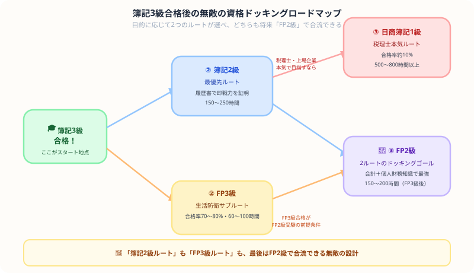

簿記3級の次に取る資格は？FP3級 vs 簿記2級の選び方【2026年版】
こんにちは、大谷です！
まずは簿記3級合格、本当におめでとうございます！やりきった達成感の反面、「よし、次は何を勉強しよう？」とテキストを並べて「うわっ、なんじゃこりゃ、選択肢多すぎてルートが分からん！」とフリーズしていませんか？（笑）
毎日会計を猛勉強している僕の視点から、履歴書で無双するための【簿記2級最優先ルート】と、生活を守る【FP3級ドッキングルート】のガチの費用対効果を熱くナビゲートします。
また、記事の末尾のほうにある【いいねボタン】のプッシュをお願いします！
簿記3級合格後の主な選択肢
| 選択肢 | 難易度 | 必要勉強時間 | こんな人におすすめ |
|---|---|---|---|
| 簿記2級に挑戦 | ★★★☆☆ | 150〜250時間 | 経理・財務職を目指す／就職・転職を控えている |
| FP3級を先に取る | ★★☆☆☆ | 60〜100時間 | お金の知識を広げたい／勉強の習慣を維持したい |

選択肢①：簿記2級に挑戦する
簿記2級
簿記3級の知識がそのまま活きるため、勉強のリズムを崩さずにステップアップできます。3級合格後すぐに学習を始めると、知識が定着している状態でスタートできるのが最大のメリットです。
- 就職・転職への直結度が高い：経理・財務職の求人票で「簿記2級以上」を条件とするものは非常に多く、履歴書で即効性のある資格です。
- 上位資格への足がかり：税理士試験（簿記論）・公認会計士・日商簿記1級へのルートが開けます。
- 学習内容が連続している：3級の仕訳・帳簿の知識を土台にして工業簿記（原価計算）が加わる構成なので、ゼロから学ぶ感覚がありません。
目安は3〜5ヶ月（1日1〜2時間）。合格率は20〜30%で、3級より難易度は上がりますが、独学合格者が多い資格でもあります。
選択肢②：FP3級を先に取る
FP3級（ファイナンシャルプランナー3級）
簿記3級で学んだ「お金の流れを読む力」は、FP（ファイナンシャルプランナー）の学習でも活きます。FP3級は税金・保険・年金・住宅ローン・資産運用など、個人のお金全般を扱う資格で、生活に直結した知識を体系的に学べます。
- 合格率が高く取りやすい：FP3級の合格率は約70〜80%。簿記3級合格後の実力があれば、60〜100時間程度でクリアできる方が多いです。
- 簿記との相性が良い：財務諸表の読み方・税金の仕組みなど、簿記で学んだ内容と重なる部分があります。
- モチベーション維持に有効：難しすぎず達成感を得やすいため、「簿記2級の本格学習前に一度別の資格を取る」という使い方でも有効です。
銀行・保険・不動産業界への就職を考えている方や、自分の家計管理・資産運用に興味がある方にも強くおすすめできます。
簿記2級まで取得した人の次のステップ
簿記2級まで取得できたなら、次の選択肢は大きく2つです。
選択肢A：FP2級を取得する（FP未取得の場合）
まだFP資格を持っていない場合、FP2級は簿記2級との組み合わせで特に威力を発揮します。会計知識（簿記2級）＋個人財務知識（FP2級）という組み合わせは、金融・保険・不動産業界だけでなく、一般企業の経理・財務部門でも評価されます。
| 項目 | FP2級 |
|---|---|
| 受験資格 | FP3級合格、または実務経験2年以上 |
| 合格率 | 約40〜50% |
| 必要勉強時間 | 150〜200時間（FP3級取得後） |
| 試験形式 | 学科（択一）＋実技（記述） |
選択肢B：日商簿記1級に挑戦する（本格的な覚悟が必要）
日商簿記1級は、簿記2級と比べて難易度の差が雲泥の差と言っても過言ではありません。合格率は約10%前後。必要な勉強時間は500〜800時間以上とも言われ、予備校に通いながら1〜2年かけて学ぶ受験生が多いです。
「税理士を目指したい」「上場企業の経理で専門性を高めたい」という明確な目標がある方には、挑戦する価値のある資格です。
ルート別まとめ：どのパターンが自分に合う？
| ゴール・状況 | おすすめルート |
|---|---|
| 経理・財務職への就職・転職を急いでいる | 簿記3級 → 簿記2級 |
| 銀行・保険・不動産を目指している | 簿記3級 → FP3級 → 簿記2級 → FP2級 |
| お金の知識を幅広く身につけたい | 簿記3級 → FP3級 → FP2級 |
| 税理士・上場企業経理を本気で目指す | 簿記3級 → 簿記2級 → 日商簿記1級 |
まとめ
- 簿記3級の次は「簿記2級」か「FP3級」の2択が基本
- 就職・転職を急ぐ場合は迷わず簿記2級へ
- 幅広い知識が欲しい・焦っていない場合はFP3級が親和性が高くおすすめ
- 簿記2級取得後はFP2級（未取得の場合）か、覚悟を決めて日商簿記1級へ
- 日商簿記1級は2級と難易度が段違い。挑戦前に詳細を必ず確認しよう
この記事が少しでも参考になったら……
3級合格という大きな一歩を踏み出せたあなたなら、次のステージも必ず攻略できます。今の勢いを大切に、一緒に次の一歩を踏み出しましょう！
僕の執筆のモチベーション維持のために、この下にある【いいねボタン】をポチッと押してもらえると、めちゃくちゃ嬉しいです！